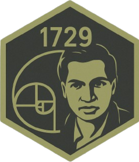

OFFLINE TTS // VOICE DATASET
Ramanujan
Ramanujan is an open-source voice training and TTS system integrating Coqui (MozillaTTS), Piper, eSpeak-NG, and pyttsx3 with CLI and PyQt5 GUI for offline, modular speech synthesis, OSC control, and dataset training.
INTERNAL – Not for public distribution. Voice datasets should be self-recorded, licensed, or explicitly consented. This reference does not provide identity-cloning workflows.
Voices0
StateIDLE
Clips0